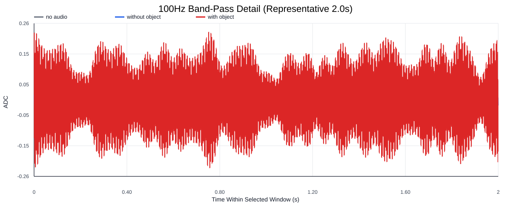
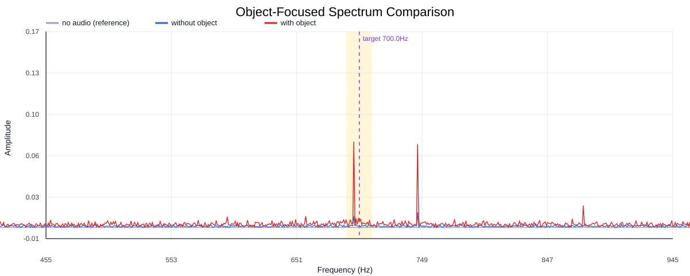
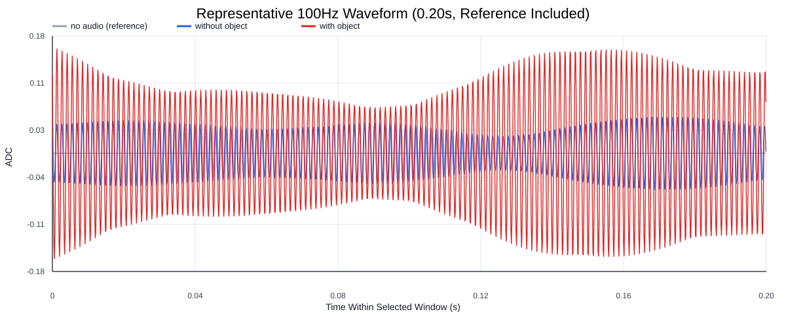
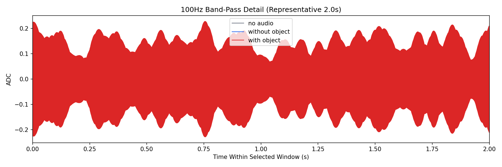
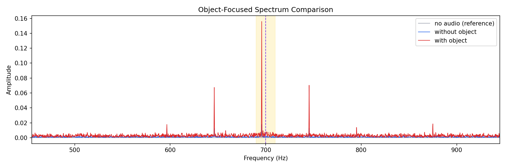
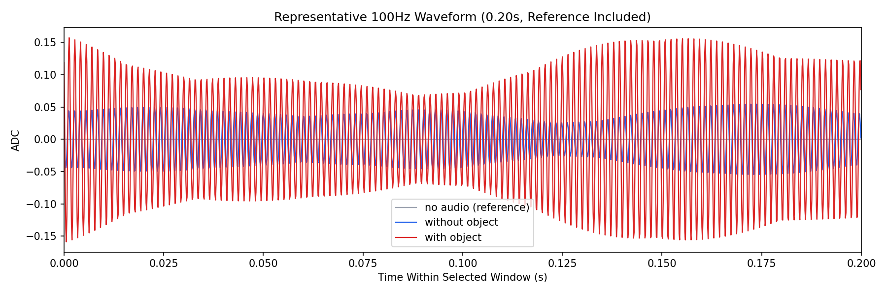

Background: F:\项目类文件夹\异物检测4.10\Data_Dual\frequency_sweep\0700Hz\repeat_01\raw\no_audio.csv
Without object: F:\项目类文件夹\异物检测4.10\Data_Dual\frequency_sweep\0700Hz\repeat_01\raw\without_object.csv
With object: F:\项目类文件夹\异物检测4.10\Data_Dual\frequency_sweep\0700Hz\repeat_01\raw\with_object.csv
| Metric | 无音频 | 100Hz无异物 | 100Hz有异物 | 无异物/无音频 | 有异物/无异物 | 有异物/无音频 |
|---|---|---|---|---|---|---|
| centered_rms | 0.016021 | 0.100612 | 0.281152 | 6.2799 | 2.7944 | 17.5486 |
| raw_target_amp | 0.000058 | 0.000870 | 0.004968 | 14.8857 | 5.7132 | 85.0446 |
| filtered_rms | 0.001377 | 0.015496 | 0.109551 | 11.2504 | 7.0694 | 79.5337 |
| filtered_target_amp | 0.000058 | 0.000870 | 0.004968 | 14.8857 | 5.7132 | 85.0446 |
| filtered_energy_ratio | 0.007391 | 0.023723 | 0.151827 | 3.2095 | 6.4000 | 20.5409 |
| window_filtered_target_amp_mean | 0.000694 | 0.018346 | 0.147099 | 26.4398 | 8.0180 | 211.9951 |
| window_filtered_target_amp_std | 0.001691 | 0.010600 | 0.035158 | 6.2703 | 3.3167 | 20.7970 |





